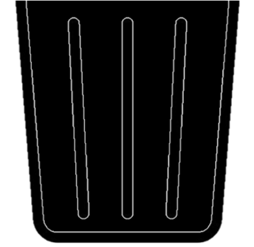

Residuos
Sólidos
Aprende a clasificar correctamente los residuos sólidos para contribuir a un futuro más sostenible. Identifica qué tipos de residuos debes depositar en cada contenedor según su color.
Residuos Peligrosos
Pilas, luminarias y medicinas vencidas.
Papel y Cartón
Para papel, revistas, periódicos y cajas de cartón.

Vidrio
Botellas, tarros y frascos de vidrio van aquí.
Metales
Latas y entre otros.
Residuos Orgánicos
Alimentos, hojarasca, entre otros

No reciclables
Cerámica, papel encerado, residuos sanitarios, entre otros.
Plásticos
Botellas, taperes, bolsas, entre otros.